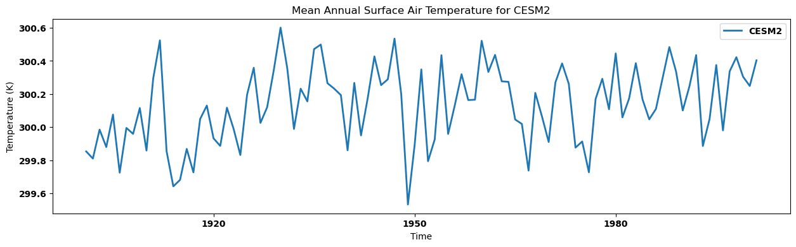
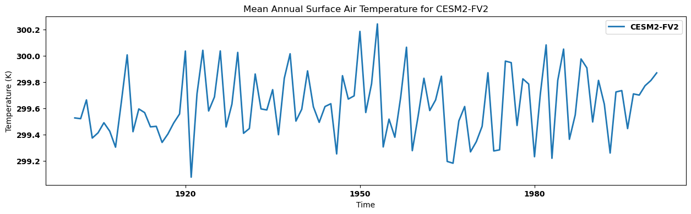
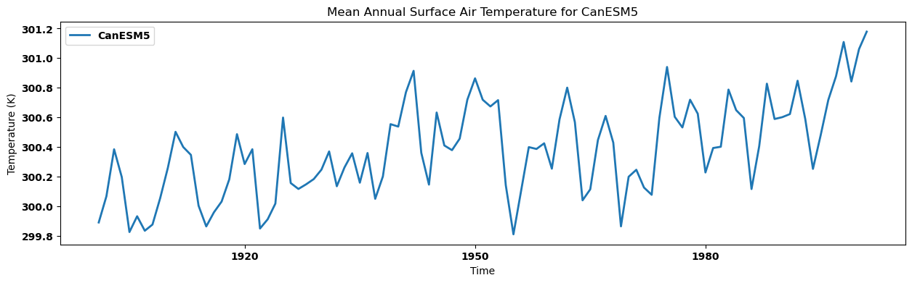
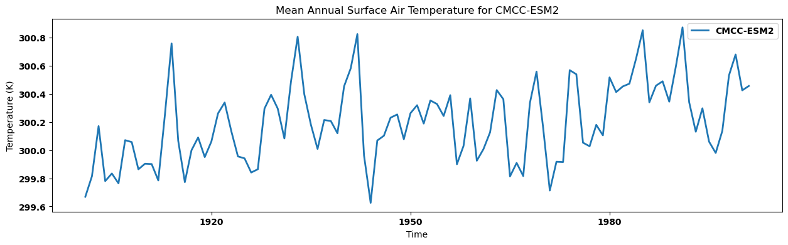
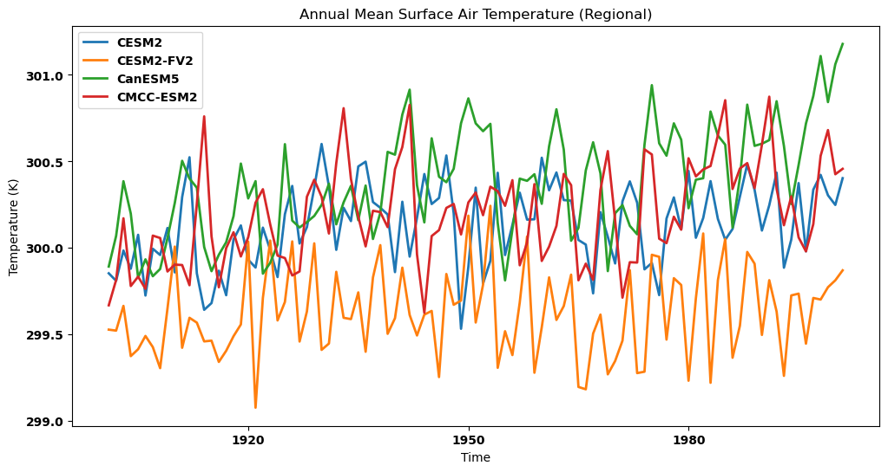

Complex Searching with intake and analysing employing xarray
Overview
This tutorial we will present access multiple historical (as an example here) data available and analyze using intake. Put them in a dictionary format employing xarray and plotting simple area average time series over a specific region.
Imports
import warnings
import intake
from distributed import Client
import holoviews as hv
import hvplot.xarray
from matplotlib import pyplot as plt
import numpy as np
import pandas as pd
# from pyesgf.search import SearchConnection
import xarray as xr
import dask
xr.set_options(display_style='html')
warnings.filterwarnings("ignore")
hv.extension('bokeh')
![](data:image/png;base64,iVBORw0KGgoAAAANSUhEUgAAAEAAAABACAYAAACqaXHeAAAABHNCSVQICAgIfAhkiAAAAAlwSFlz
AAAB+wAAAfsBxc2miwAAABl0RVh0U29mdHdhcmUAd3d3Lmlua3NjYXBlLm9yZ5vuPBoAAA6zSURB
VHic7ZtpeFRVmsf/5966taWqUlUJ2UioBBJiIBAwCZtog9IOgjqACsogKtqirT2ttt069nQ/zDzt
tI4+CrJIREFaFgWhBXpUNhHZQoKBkIUASchWla1S+3ar7r1nPkDaCAnZKoQP/D7mnPOe9/xy76n3
nFSAW9ziFoPFNED2LLK5wcyBDObkb8ZkxuaoSYlI6ZcOKq1eWFdedqNzGHQBk9RMEwFAASkk0Xw3
ETacDNi2vtvc7L0ROdw0AjoSotQVkKSvHQz/wRO1lScGModBFbDMaNRN1A4tUBCS3lk7BWhQkgpD
lG4852/+7DWr1R3uHAZVQDsbh6ZPN7CyxUrCzJMRouusj0ipRwD2uKm0Zn5d2dFwzX1TCGhnmdGo
G62Nna+isiUqhkzuKrkQaJlPEv5mFl2fvGg2t/VnzkEV8F5ioioOEWkLG86fvbpthynjdhXYZziQ
x1hC9J2NFyi8vCTt91Fh04KGip0AaG9zuCk2wQCVyoNU3Hjezee9bq92duzzTmxsRJoy+jEZZZYo
GTKJ6SJngdJqAfRzpze0+jHreUtPc7gpBLQnIYK6BYp/uGhw9YK688eu7v95ysgshcg9qSLMo3JC
4jqLKQFBgdKDPoQ+Pltb8dUyQLpeDjeVgI6EgLIQFT5tEl3rn2losHVsexbZ3EyT9wE1uGdkIPcy
BGxn8QUq1QrA5nqW5i2tLqvrrM9NK6AdkVIvL9E9bZL/oyfMVd/jqvc8LylzRBKDJSzIExwhQzuL
QYGQj4rHfFTc8mUdu3E7yoLtbTe9gI4EqVgVkug2i5+uXGo919ixbRog+3fTbQ8qJe4ZOYNfMoTI
OoshUNosgO60AisX15aeI2PSIp5KiFLI9ubb1vV3Qb2ltwLakUCDAkWX7/nHKRmmGIl9VgYsUhJm
2NXjKYADtM1ygne9QQDIXlk49FBstMKx66D1v4+XuQr7vqTe0VcBHQlRWiOCbmmSYe2SqtL6q5rJ
zsTb7lKx3FKOYC4DoqyS/B5bvLPxvD9Qtf6saxYLQGJErmDOdOMr/zo96km1nElr8bmPOBwI9COv
HnFPRIwmkSOv9kcAS4heRsidOkpeWBgZM+UBrTFAXNYL5Vf2ii9c1trNzpYdaoVil3WIc+wdk+gQ
noie3ecCcxt9ITcLAPWt/laGEO/9U6PmzZkenTtsSMQ8uYywJVW+grCstAvCIaAdArAsIWkRDDs/
KzLm2YcjY1Lv0UdW73HabE9n6V66cxSzfEmuJssTpKGVp+0vHq73FwL46eOjpMpbRAnNmJFrGJNu
Ukf9Yrz+3rghiumCKNXXWPhLYcjxGsIpoCMsIRoFITkW8AuyM8jC1+/QLx4bozCEJIq38+1rtpR6
V/yzb8eBlRb3fo5l783N0CWolAzJHaVNzkrTzlEp2bQ2q3TC5gn6wpnoQAmwSiGh2GitnTmVMc5O
UyfKWUKCIsU7+fZDKwqdT6DDpvkzAX4/+AMFjk0tDp5GRXLpQ2MUmhgDp5gxQT8+Y7hyPsMi8uxF
71H0oebujHALECjFKaW9Lm68n18wXp2kVzIcABytD5iXFzg+WVXkegpAsOOYziqo0OkK76GyquC3
ltZAzMhhqlSNmmWTE5T6e3IN05ITFLM4GdN0vtZ3ob8Jh1NAKXFbm5PtLU/eqTSlGjkNAJjdgn/N
aedXa0tdi7+t9G0FIF49rtMSEgAs1kDLkTPO7ebm4IUWeyh1bKomXqlgMG6kJmHcSM0clYLJ8XtR
1GTnbV3F6I5wCGikAb402npp1h1s7LQUZZSMIfALFOuL3UUrfnS8+rez7v9qcold5tilgHbO1fjK
9ubb17u9oshxzMiUBKXWqJNxd+fqb0tLVs4lILFnK71H0Ind7uiPgACVcFJlrb0tV6DzxqqTIhUM
CwDf1/rrVhTa33/3pGPxJYdQ2l2cbgVcQSosdx8uqnDtbGjh9SlDVSMNWhlnilfqZk42Th2ZpLpf
xrHec5e815zrr0dfBZSwzkZfqsv+1FS1KUknUwPARVvItfKUY+cn57yP7qv07UE3p8B2uhUwLk09
e0SCOrK+hbdYHYLjRIl71wWzv9jpEoeOHhGRrJAzyEyNiJuUqX0g2sBN5kGK6y2Blp5M3lsB9Qh4
y2Ja6x6+i0ucmKgwMATwhSjdUu49tKrQ/pvN5d53ml2CGwCmJipmKjgmyuaXzNeL2a0AkQ01Th5j
2DktO3Jyk8f9vcOBQHV94OK+fPumJmvQHxJoWkaKWq9Vs+yUsbq0zGT1I4RgeH2b5wef7+c7bl8F
eKgoHVVZa8ZPEORzR6sT1BzDUAD/d9F78e2Tzv99v8D+fLVTqAKAsbGamKey1Mt9Ann4eH3gTXTz
idWtAJ8PQWOk7NzSeQn/OTHDuEikVF1R4z8BQCy+6D1aWRfY0tTGG2OM8rRoPaeIj5ZHzJxszElN
VM8K8JS5WOfv8mzRnQAKoEhmt8gyPM4lU9SmBK1MCQBnW4KONT86v1hZ1PbwSXPw4JWussVjtH9Y
NCoiL9UoH/6PSu8jFrfY2t36erQHXLIEakMi1SydmzB31h3GGXFDFNPaK8Rme9B79Ixrd0WN+1ij
NRQ/doRmuFLBkHSTOm5GruG+pFjFdAmorG4IXH1Qua6ASniclfFtDYt+oUjKipPrCQB7QBQ2lrgP
fFzm+9XWUtcqJ3/5vDLDpJ79XHZk3u8nGZ42qlj1+ydtbxysCezrydp6ugmipNJ7WBPB5tydY0jP
HaVNzs3QzeE4ZpTbI+ZbnSFPbVOw9vsfnVvqWnirPyCNGD08IlqtYkh2hjZ5dErEQzoNm+6ykyOt
Lt5/PQEuSRRKo22VkydK+vvS1XEKlhCJAnsqvcVvH7f/ZU2R67eXbMEGAMiIV5oWZWiWvz5Fv2xG
sjqNJQRvn3Rs2lji/lNP19VjAQDgD7FHhujZB9OGqYxRkZxixgRDVlqS6uEOFaJUVu0rPFzctrnF
JqijImVp8dEKVWyUXDk92zAuMZ6bFwpBU1HrOw6AdhQgUooChb0+ItMbWJitSo5Ws3IAOGEOtL53
0vHZih9sC4vtofZ7Qu6523V/fmGcds1TY3V36pUsBwAbSlxnVh2xLfAD/IAIMDf7XYIkNmXfpp2l
18rkAJAy9HKFaIr/qULkeQQKy9zf1JgDB2uaeFNGijo5QsUyacNUUTOnGO42xSnv4oOwpDi1zYkc
efUc3I5Gk6PhyTuVKaOGyLUAYPGIoY9Pu/atL/L92+4q9wbflRJ2Trpm/jPjdBtfnqB/dIThcl8A
KG7hbRuKnb8qsQsVvVlTrwQAQMUlf3kwJI24Z4JhPMtcfng5GcH49GsrxJpGvvHIaeem2ma+KSjQ
lIwUdYyCY8j4dE1KzijNnIP2llF2wcXNnsoapw9XxsgYAl6k+KzUXbi2yP3KR2ecf6z3BFsBICdW
nvnIaG3eHybqX7vbpEqUMT+9OL4Qpe8VON7dXuFd39v19FoAABRVePbGGuXTszO0P7tu6lghUonE
llRdrhArLvmKdh9u29jcFiRRkfLUxBiFNiqSU9icoZQHo5mYBI1MBgBH6wMNb+U7Pnw337H4gi1Y
ciWs+uks3Z9fztUvfzxTm9Ne8XXkvQLHNytOOZeiD4e0PgkAIAYCYknKUNUDSXEKzdWNpnil7r4p
xqkjTarZMtk/K8TQ6Qve78qqvXurGwIJqcOUKfUWHsm8KGvxSP68YudXq4pcj39X49uOK2X142O0
Tz5/u/7TVybqH0rSya6ZBwD21/gubbrgWdDgEOx9WUhfBaC2ibcEBYm7a7x+ukrBMNcEZggyR0TE
T8zUPjikQ4VosQZbTpS4vqizBKvqmvjsqnpfzaZyx9JPiz1/bfGKdgD45XB1zoIMzYbfTdS/NClB
Gct0USiY3YL/g0LHy/uq/Ef6uo5+n0R/vyhp17Klpge763f8rMu6YU/zrn2nml+2WtH+Z+5IAAFc
2bUTdTDOSNa9+cQY7YLsOIXhevEkCvzph7a8laecz/Un/z4/Ae04XeL3UQb57IwU9ZDr9UuKVajv
nxp1+1UVIo/LjztZkKH59fO3G/JemqCfmaCRqbqbd90ZZ8FfjtkfAyD0J/9+C2h1hDwsSxvGjNDc
b4zk5NfrSwiQblLHzZhg+Jf4aPlUwpDqkQqa9nimbt1/TDH8OitGMaQnj+RJS6B1fbF7SY1TqO5v
/v0WAADl1f7zokgS7s7VT2DZ7pegUjBM7mjtiDZbcN4j0YrHH0rXpCtY0qPX0cVL0rv5jv/ZXend
0u/EESYBAFBU4T4Qa5TflZOhTe7pmKpaP8kCVUVw1+yhXfJWvn1P3hnXi33JsTN6PnP3hHZ8Z3/h
aLHzmkNPuPj7Bc/F/Q38CwjTpSwQXgE4Vmwry9tpfq/ZFgqFMy4AVDtCvi8rvMvOmv0N4YwbVgEA
sPM72/KVnzfspmH7HQGCRLG2yL1+z8XwvPcdCbsAANh+xPzstgMtxeGKt+6MK3/tacfvwhWvIwMi
oKEBtm0H7W+UVfkc/Y1V0BhoPlDr/w1w/eu1vjIgAgDg22OtX6/eYfnEz/focrZTHAFR+PSs56/7
q32nwpjazxgwAQCwcU/T62t3WL7r6/jVRa6/byp1rei+Z98ZUAEAhEPHPc8fKnTU9nbgtnOe8h0l
9hcGIqmODLQAHCy2Xti6v/XNRivf43f4fFvIteu854+VHnR7q9tfBlwAAGz+pnndB9vM26UebAe8
SLHujPOTPVW+rwY+sxskAAC2HrA8t2Vvc7ffP1r9o+vwR2dcr92InIAbKKC1FZ5tB1tf+/G8p8sv
N/9Q5zd/XR34LYCwV5JdccMEAMDBk45DH243r/X4xGvqxFa/GNpS7n6rwOwNWwHVE26oAADYurf1
zx/utOzt+DMKYM0p17YtZZ5VNzqfsB2HewG1WXE8PoZ7gOclbTIvynZf9JV+fqZtfgs/8F/Nu5rB
EIBmJ+8QRMmpU7EzGRsf2FzuePqYRbzh/zE26EwdrT10f6r6o8HOYzCJB9Dpff8tbnGLG8L/A/WE
roTBs2RqAAAAAElFTkSuQmCC)
![]()
cat_url = "https://storage.googleapis.com/cmip6/pangeo-cmip6.json"
col = intake.open_esm_datastore(cat_url)
col
pangeo-cmip6 catalog with 7674 dataset(s) from 514818 asset(s):
| unique | |
|---|---|
| activity_id | 18 |
| institution_id | 36 |
| source_id | 88 |
| experiment_id | 170 |
| member_id | 657 |
| table_id | 37 |
| variable_id | 700 |
| grid_label | 10 |
| zstore | 514818 |
| dcpp_init_year | 60 |
| version | 736 |
| derived_variable_id | 0 |
cat = col.search(experiment_id=["historical"],
variable_id = ["tas"],
member_id = ["r1i1p1f1"],
table_id = ["Amon",],
source_id = [ "CMCC-ESM2", "CanESM5", "CESM2", "CESM2-FV2", ]
)
cat.df
| activity_id | institution_id | source_id | experiment_id | member_id | table_id | variable_id | grid_label | zstore | dcpp_init_year | version | |
|---|---|---|---|---|---|---|---|---|---|---|---|
| 0 | CMIP | NCAR | CESM2 | historical | r1i1p1f1 | Amon | tas | gn | gs://cmip6/CMIP6/CMIP/NCAR/CESM2/historical/r1... | NaN | 20190308 |
| 1 | CMIP | CCCma | CanESM5 | historical | r1i1p1f1 | Amon | tas | gn | gs://cmip6/CMIP6/CMIP/CCCma/CanESM5/historical... | NaN | 20190429 |
| 2 | CMIP | NCAR | CESM2-FV2 | historical | r1i1p1f1 | Amon | tas | gn | gs://cmip6/CMIP6/CMIP/NCAR/CESM2-FV2/historica... | NaN | 20191120 |
| 3 | CMIP | CMCC | CMCC-ESM2 | historical | r1i1p1f1 | Amon | tas | gn | gs://cmip6/CMIP6/CMIP/CMCC/CMCC-ESM2/historica... | NaN | 20210114 |
dset_dict = cat.to_dataset_dict(zarr_kwargs={'consolidated': True})
list(dset_dict.keys())
--> The keys in the returned dictionary of datasets are constructed as follows:
'activity_id.institution_id.source_id.experiment_id.table_id.grid_label'
100.00% [4/4 00:09<00:00]
['CMIP.NCAR.CESM2.historical.Amon.gn',
'CMIP.NCAR.CESM2-FV2.historical.Amon.gn',
'CMIP.CCCma.CanESM5.historical.Amon.gn',
'CMIP.CMCC.CMCC-ESM2.historical.Amon.gn']
ds = {}
for key in dset_dict.keys():
# Sort the dataset by time
sorted_dataset = dset_dict[key].sortby("time")
# Subset data for years 1900-2000
ds[key] = sorted_dataset.sel(time=slice("1900", "2000"))
# Optional: Print a message indicating dataset processing
print(f"Processing dataset: {key}")
Processing dataset: CMIP.NCAR.CESM2.historical.Amon.gn
Processing dataset: CMIP.NCAR.CESM2-FV2.historical.Amon.gn
Processing dataset: CMIP.CCCma.CanESM5.historical.Amon.gn
Processing dataset: CMIP.CMCC.CMCC-ESM2.historical.Amon.gn
ds now contains subset of datasets for each key in dset_dict
Let’s check ds
ds
{'CMIP.NCAR.CESM2.historical.Amon.gn': <xarray.Dataset> Size: 268MB
Dimensions: (lat: 192, nbnd: 2, lon: 288, member_id: 1,
dcpp_init_year: 1, time: 1212)
Coordinates:
* lat (lat) float64 2kB -90.0 -89.06 -88.12 ... 88.12 89.06 90.0
lat_bnds (lat, nbnd) float32 2kB dask.array<chunksize=(192, 2), meta=np.ndarray>
* lon (lon) float64 2kB 0.0 1.25 2.5 3.75 ... 356.2 357.5 358.8
lon_bnds (lon, nbnd) float32 2kB dask.array<chunksize=(288, 2), meta=np.ndarray>
* time (time) object 10kB 1900-01-15 12:00:00 ... 2000-12-15 12:...
time_bnds (time, nbnd) object 19kB dask.array<chunksize=(1212, 2), meta=np.ndarray>
* member_id (member_id) object 8B 'r1i1p1f1'
* dcpp_init_year (dcpp_init_year) float64 8B nan
Dimensions without coordinates: nbnd
Data variables:
tas (member_id, dcpp_init_year, time, lat, lon) float32 268MB dask.array<chunksize=(1, 1, 600, 192, 288), meta=np.ndarray>
Attributes: (12/61)
Conventions: CF-1.7 CMIP-6.2
activity_id: CMIP
branch_method: standard
branch_time_in_child: 674885.0
branch_time_in_parent: 219000.0
case_id: 15
... ...
intake_esm_attrs:variable_id: tas
intake_esm_attrs:grid_label: gn
intake_esm_attrs:zstore: gs://cmip6/CMIP6/CMIP/NCAR/CESM2/histor...
intake_esm_attrs:version: 20190308
intake_esm_attrs:_data_format_: zarr
intake_esm_dataset_key: CMIP.NCAR.CESM2.historical.Amon.gn,
'CMIP.NCAR.CESM2-FV2.historical.Amon.gn': <xarray.Dataset> Size: 67MB
Dimensions: (lat: 96, nbnd: 2, lon: 144, member_id: 1,
dcpp_init_year: 1, time: 1212)
Coordinates:
* lat (lat) float64 768B -90.0 -88.11 -86.21 ... 86.21 88.11 90.0
lat_bnds (lat, nbnd) float64 2kB dask.array<chunksize=(96, 2), meta=np.ndarray>
* lon (lon) float64 1kB 0.0 2.5 5.0 7.5 ... 352.5 355.0 357.5
lon_bnds (lon, nbnd) float64 2kB dask.array<chunksize=(144, 2), meta=np.ndarray>
* time (time) object 10kB 1900-01-15 12:00:00 ... 2000-12-15 12:...
time_bnds (time, nbnd) object 19kB dask.array<chunksize=(1212, 2), meta=np.ndarray>
* member_id (member_id) object 8B 'r1i1p1f1'
* dcpp_init_year (dcpp_init_year) float64 8B nan
Dimensions without coordinates: nbnd
Data variables:
tas (member_id, dcpp_init_year, time, lat, lon) float32 67MB dask.array<chunksize=(1, 1, 390, 96, 144), meta=np.ndarray>
Attributes: (12/61)
Conventions: CF-1.7 CMIP-6.2
activity_id: CMIP
branch_method: standard
branch_time_in_child: 674885.0
branch_time_in_parent: 10950.0
case_id: 1559
... ...
intake_esm_attrs:variable_id: tas
intake_esm_attrs:grid_label: gn
intake_esm_attrs:zstore: gs://cmip6/CMIP6/CMIP/NCAR/CESM2-FV2/hi...
intake_esm_attrs:version: 20191120
intake_esm_attrs:_data_format_: zarr
intake_esm_dataset_key: CMIP.NCAR.CESM2-FV2.historical.Amon.gn,
'CMIP.CCCma.CanESM5.historical.Amon.gn': <xarray.Dataset> Size: 40MB
Dimensions: (lat: 64, bnds: 2, lon: 128, member_id: 1,
dcpp_init_year: 1, time: 1212)
Coordinates:
height float64 8B ...
* lat (lat) float64 512B -87.86 -85.1 -82.31 ... 82.31 85.1 87.86
lat_bnds (lat, bnds) float64 1kB dask.array<chunksize=(64, 2), meta=np.ndarray>
* lon (lon) float64 1kB 0.0 2.812 5.625 ... 351.6 354.4 357.2
lon_bnds (lon, bnds) float64 2kB dask.array<chunksize=(128, 2), meta=np.ndarray>
* time (time) object 10kB 1900-01-16 12:00:00 ... 2000-12-16 12:...
time_bnds (time, bnds) object 19kB dask.array<chunksize=(1212, 2), meta=np.ndarray>
* member_id (member_id) object 8B 'r1i1p1f1'
* dcpp_init_year (dcpp_init_year) float64 8B nan
Dimensions without coordinates: bnds
Data variables:
tas (member_id, dcpp_init_year, time, lat, lon) float32 40MB dask.array<chunksize=(1, 1, 600, 64, 128), meta=np.ndarray>
Attributes: (12/69)
CCCma_model_hash: 3dedf95315d603326fde4f5340dc0519d80d10c0
CCCma_parent_runid: rc3-pictrl
CCCma_pycmor_hash: 33c30511acc319a98240633965a04ca99c26427e
CCCma_runid: rc3.1-his01
Conventions: CF-1.7 CMIP-6.2
YMDH_branch_time_in_child: 1850:01:01:00
... ...
intake_esm_attrs:variable_id: tas
intake_esm_attrs:grid_label: gn
intake_esm_attrs:zstore: gs://cmip6/CMIP6/CMIP/CCCma/CanESM5/his...
intake_esm_attrs:version: 20190429
intake_esm_attrs:_data_format_: zarr
intake_esm_dataset_key: CMIP.CCCma.CanESM5.historical.Amon.gn,
'CMIP.CMCC.CMCC-ESM2.historical.Amon.gn': <xarray.Dataset> Size: 268MB
Dimensions: (lat: 192, bnds: 2, lon: 288, member_id: 1,
dcpp_init_year: 1, time: 1212)
Coordinates:
height float64 8B ...
* lat (lat) float64 2kB -90.0 -89.06 -88.12 ... 88.12 89.06 90.0
lat_bnds (lat, bnds) float64 3kB dask.array<chunksize=(192, 2), meta=np.ndarray>
* lon (lon) float64 2kB 0.0 1.25 2.5 3.75 ... 356.2 357.5 358.8
lon_bnds (lon, bnds) float64 5kB dask.array<chunksize=(288, 2), meta=np.ndarray>
* time (time) object 10kB 1900-01-16 12:00:00 ... 2000-12-16 12:...
time_bnds (time, bnds) object 19kB dask.array<chunksize=(1212, 2), meta=np.ndarray>
* member_id (member_id) object 8B 'r1i1p1f1'
* dcpp_init_year (dcpp_init_year) float64 8B nan
Dimensions without coordinates: bnds
Data variables:
tas (member_id, dcpp_init_year, time, lat, lon) float32 268MB dask.array<chunksize=(1, 1, 208, 192, 288), meta=np.ndarray>
Attributes: (12/64)
Conventions: CF-1.7 CMIP-6.2
activity_id: CMIP
branch_method: standard
branch_time_in_child: 0.0
branch_time_in_parent: 0.0
cmor_version: 3.6.0
... ...
intake_esm_attrs:variable_id: tas
intake_esm_attrs:grid_label: gn
intake_esm_attrs:zstore: gs://cmip6/CMIP6/CMIP/CMCC/CMCC-ESM2/hi...
intake_esm_attrs:version: 20210114
intake_esm_attrs:_data_format_: zarr
intake_esm_dataset_key: CMIP.CMCC.CMCC-ESM2.historical.Amon.gn}
Calculate regional mean for each dataset and visualizing time series
regn_mean = {}
for key in dset_dict.keys():
regn_mean[key] = ds[key]['tas'].sel(lon=slice(65, 100), lat=slice(5, 25)).mean(dim=['lon', 'lat']).squeeze()
regn_mean
{'CMIP.NCAR.CESM2.historical.Amon.gn': <xarray.DataArray 'tas' (time: 1212)> Size: 5kB
dask.array<getitem, shape=(1212,), dtype=float32, chunksize=(600,), chunktype=numpy.ndarray>
Coordinates:
* time (time) object 10kB 1900-01-15 12:00:00 ... 2000-12-15 12:...
member_id <U8 32B 'r1i1p1f1'
dcpp_init_year float64 8B nan,
'CMIP.NCAR.CESM2-FV2.historical.Amon.gn': <xarray.DataArray 'tas' (time: 1212)> Size: 5kB
dask.array<getitem, shape=(1212,), dtype=float32, chunksize=(822,), chunktype=numpy.ndarray>
Coordinates:
* time (time) object 10kB 1900-01-15 12:00:00 ... 2000-12-15 12:...
member_id <U8 32B 'r1i1p1f1'
dcpp_init_year float64 8B nan,
'CMIP.CCCma.CanESM5.historical.Amon.gn': <xarray.DataArray 'tas' (time: 1212)> Size: 5kB
dask.array<getitem, shape=(1212,), dtype=float32, chunksize=(600,), chunktype=numpy.ndarray>
Coordinates:
height float64 8B ...
* time (time) object 10kB 1900-01-16 12:00:00 ... 2000-12-16 12:...
member_id <U8 32B 'r1i1p1f1'
dcpp_init_year float64 8B nan,
'CMIP.CMCC.CMCC-ESM2.historical.Amon.gn': <xarray.DataArray 'tas' (time: 1212)> Size: 5kB
dask.array<getitem, shape=(1212,), dtype=float32, chunksize=(404,), chunktype=numpy.ndarray>
Coordinates:
height float64 8B ...
* time (time) object 10kB 1900-01-16 12:00:00 ... 2000-12-16 12:...
member_id <U8 32B 'r1i1p1f1'
dcpp_init_year float64 8B nan}
plt.rcParams['figure.figsize'] = [15, 4]
plt.rcParams['lines.linewidth'] = 2
plt.rcParams['font.size'] = 10
plt.rcParams['font.weight'] = 'bold'
Calculating annual mean for each dataset and visualizing time series
annual_mean = {}
for key, regm in regn_mean.items():
annual_mean[key] = regm.resample(time='Y').mean()
annual_mean
{'CMIP.NCAR.CESM2.historical.Amon.gn': <xarray.DataArray 'tas' (time: 101)> Size: 404B
dask.array<stack, shape=(101,), dtype=float32, chunksize=(1,), chunktype=numpy.ndarray>
Coordinates:
member_id <U8 32B 'r1i1p1f1'
dcpp_init_year float64 8B nan
* time (time) object 808B 1900-12-31 00:00:00 ... 2000-12-31 00:...,
'CMIP.NCAR.CESM2-FV2.historical.Amon.gn': <xarray.DataArray 'tas' (time: 101)> Size: 404B
dask.array<stack, shape=(101,), dtype=float32, chunksize=(1,), chunktype=numpy.ndarray>
Coordinates:
member_id <U8 32B 'r1i1p1f1'
dcpp_init_year float64 8B nan
* time (time) object 808B 1900-12-31 00:00:00 ... 2000-12-31 00:...,
'CMIP.CCCma.CanESM5.historical.Amon.gn': <xarray.DataArray 'tas' (time: 101)> Size: 404B
dask.array<stack, shape=(101,), dtype=float32, chunksize=(1,), chunktype=numpy.ndarray>
Coordinates:
height float64 8B ...
member_id <U8 32B 'r1i1p1f1'
dcpp_init_year float64 8B nan
* time (time) object 808B 1900-12-31 00:00:00 ... 2000-12-31 00:...,
'CMIP.CMCC.CMCC-ESM2.historical.Amon.gn': <xarray.DataArray 'tas' (time: 101)> Size: 404B
dask.array<stack, shape=(101,), dtype=float32, chunksize=(1,), chunktype=numpy.ndarray>
Coordinates:
height float64 8B ...
member_id <U8 32B 'r1i1p1f1'
dcpp_init_year float64 8B nan
* time (time) object 808B 1900-12-31 00:00:00 ... 2000-12-31 00:...}
Visualizing the regional annual mean for each dataset
for key, anmn in annual_mean.items():
source_id = key.split('.')[2]
anmn.plot(label=source_id)
plt.title(f"Mean Annual Surface Air Temperature for {source_id}")
plt.xlabel('Time')
plt.ylabel('Temperature (K)')
plt.legend()
plt.show()




Visualizing the regional annual mean for each dataset in a single panel
# Create the plot
plt.figure(figsize=(12, 6))
# Plotting the annual mean for each dataset on the same plot
for key, annm in annual_mean.items():
source_id = key.split('.')[2]
annm.plot(label=source_id)
plt.title("Annual Mean Surface Air Temperature (Regional)")
plt.xlabel('Time')
plt.ylabel('Temperature (K)')
plt.legend()
plt.show()
